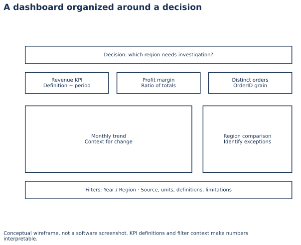

Lecture 19: Dashboard Thinking
Purpose-first dashboards: layout hierarchy, KPI design, filters, and interaction patterns that support decisions — not wallpaper.
1. Learning Objectives
- 1 Define dashboard purpose and audience before placing visuals.
- 2 Design a layout hierarchy (KPIs → primary → secondary).
- 3 Select a minimal KPI set tied to decisions.
- 4 Plan filters and interactions that match real workflows.
- 5 Wireframe a sales/ops dashboard and defend the layout.
2. Purpose First
A dashboard is a decision workspace. If you cannot state the decision, you cannot prioritize space. One page, one primary job.
3. Layout Hierarchy
4. KPIs & Filters
Few KPIs, each owned and actionable (see L4). Filters should match decision segments (time, region, product) — not every column in the model.
5. Interaction Patterns
- Cross-filtering between charts
- Slicers with default “current period”
- Drillthrough for detail without cluttering the main page
- Clear reset affordance
6. Practical — Wireframe a Sales Ops Dashboard
- Write the decision and 3–5 KPIs.
- Sketch KPI row + one trend + one breakdown + slicers.
- Mark what is out of scope for page 1.
- Peer-test the 10-second comprehension rule.
7. Knowledge Check
Q1. Before placing charts on a dashboard:
8. Summary
- Purpose → layout hierarchy → minimal KPIs → purposeful interactions.
9. What’s Next
Lecture 20 — Power BI Import & Model Prep moves from design thinking into the tool: get data, Power Query, and model readiness.
Worked practice: Build a decision-oriented layout
Explore the bundled retail report. Change Year and Region and verify cards, chart and table share the same context. Sketch a layout for a specific audience.
Interpretation check: Every KPI needs a definition, date window, units and denominator. The browser report is a working teaching example, not a Power BI screenshot.
Setup, all labs, datasets, DAX measures and capstone guidance · Interactive retail teaching report
A dashboard organized around a decision


Interpret: Why show filter context?
The same measure changes under different dates and segments.
Read diagram labels (mobile text)
- Decision: which region needs investigation?
- Revenue KPI
- Definition + period
- Profit margin
- Ratio of totals
- Distinct orders
- OrderID grain
- Monthly trend
- Context for change
- Region comparison
- Identify exceptions
- Filters: Year / Region · Source, units, definitions, limitations
- A dashboard organized around a decision
- Conceptual wireframe, not a software screenshot. KPI definitions and filter context make numbers
- interpretable.
Your reading progress
Completion is self-reported reading progress, not a mastery score. Use the lab and interpretation checks to assess understanding.